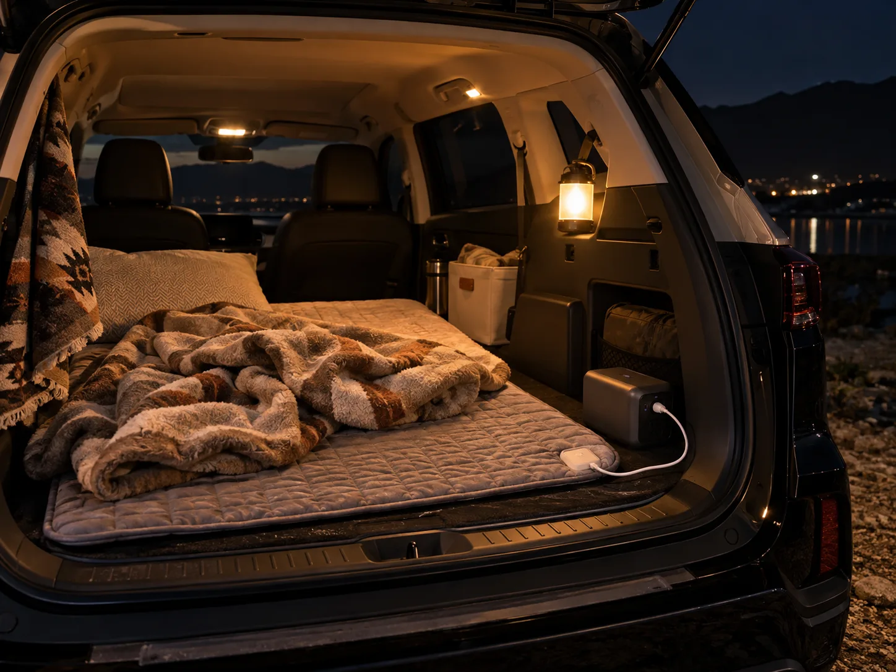
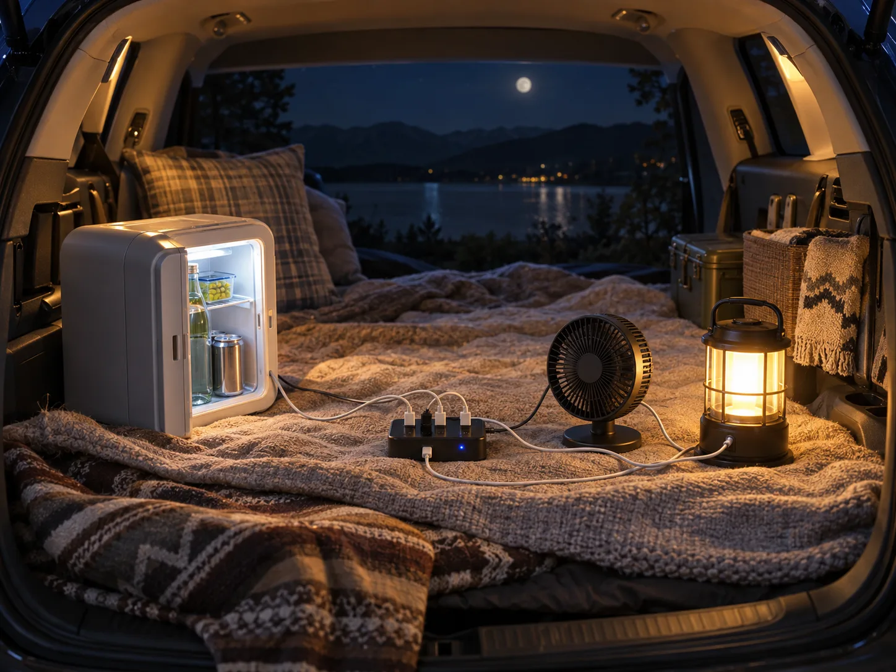
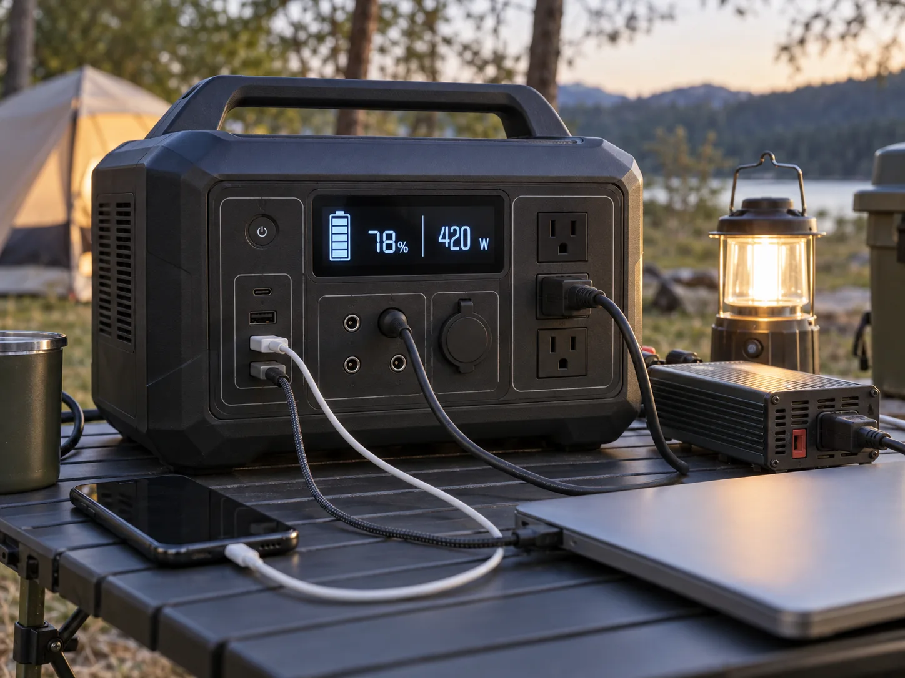

▲ 차박 중 전기장판과 조명을 함께 켜두면 순식간에 일반 차량 배터리의 여유 용량을 넘어선다
차박 커뮤니티에 심심찮게 올라오는 후기가 있다. 전기장판을 켜놓고 잠들었다가 다음 날 아침 시동이 걸리지 않아 보험사 긴급출동을 부르거나, 인적 드문 곳에서 발이 묶였다는 이야기다. 원인은 대개 비슷하다. 전기장판, 미니냉장고, 조명, 선풍기까지 한꺼번에 켜놓고 밤새 방치한 것이다. 그런데 이건 운이 나빴다기보다는, 애초에 얼마나 전기를 쓰는지 계산을 안 했기 때문에 벌어지는 일이다. 기기별 소비전력(W)에 사용시간을 곱하면 필요한 전력량(Wh)이 정확히 나온다. 이 숫자만 미리 뽑아두면 배터리가 감당할 수 있는지, 보조배터리를 챙겨야 하는지는 계산기 두드리듯 판단할 수 있다.

▲ 차박을 떠나기 전 배터리 단자 상태와 전압을 미리 점검해두는 것이 방전 예방의 첫걸음이다
1. 왜 배터리가 방전되나 — SOC와 시동 전압의 관계
일반 승용차에 쓰이는 납산(lead-acid) 배터리는 충전량(SOC, State of Charge)이 40% 이하로 떨어지면 전압이 12V 아래로 내려가기 시작한다. 전압이 낮아지면 시동모터를 돌릴 순간 전류를 공급하지 못해 '딸깍' 소리만 내며 시동이 걸리지 않는 상태에 빠진다. 반면 차박용 리튬인산철(LiFePO4) 보조배터리는 충전량이 10%까지 떨어져도 12V 이상 전압을 유지하는 특성이 있어, 같은 방전 상태에서도 시동에는 영향을 주지 않는다. 즉 문제는 '전기를 많이 써서'가 아니라 시동용 납산 배터리로 캠핑용 전자기기까지 함께 감당하려 했기 때문에 생긴다. 계기판 밝기가 평소보다 어둡거나, 리모컨 잠금·실내등 반응이 느려졌다면 이미 SOC가 위험 수준까지 내려갔다는 신호로 봐야 한다.
2. 전력 예산표 만드는 법 — 기기별 소비전력 × 사용시간
계산은 단순하다. 소비전력(W) × 사용시간(h) = 필요 전력량(Wh). 여기에 12V를 220V로 바꿔주는 인버터를 거치면 변환 과정에서 전력 손실이 생기는데, 캠핑 전력 가이드에서는 이 손실을 약 15%로 잡고 필요 Wh ÷ 0.85로 여유분을 더 얹을 것을 권한다. 실제 차박에서 많이 쓰는 기기들의 소비전력을 찾아 계산해보면 다음과 같다.
| 기기 | 소비전력(W) | 사용시간 | 필요 전력량(Wh) |
|---|---|---|---|
| 전기장판(12V, 1단) | 40W | 8시간 | 320Wh |
| 미니냉장고(40~45L급) | 45W | 10시간 | 450Wh |
| 미니 선풍기(USB) | 30W | 5시간 | 150Wh |
| LED 캠핑랜턴/무드등 | 5W | 6시간 | 30Wh |
| 스마트폰 충전 | 10W | 1시간 | 10Wh |
※ 캠프나라 전력사용량 가이드·다나와 제품 스펙 기준. 전기장판은 단수(온도)에 따라 30~60W, 미니냉장고는 모델에 따라 40~60W까지 편차가 있어 실제 제품 라벨을 확인하는 편이 정확하다.
여기서 끝이 아니다. 실제로는 여러 기기를 동시에 켜두는 경우가 많으므로, 필요 전력량은 각 기기의 값을 더한 '합산'으로 계산해야 한다. 전기장판만 켜는 것과, 전기장판에 냉장고·선풍기·랜턴까지 얹는 것은 완전히 다른 이야기다.

▲ 미니냉장고, 선풍기, 랜턴을 동시에 연결해 쓰면 필요 전력량은 단순히 더한 값이 된다
3. 시나리오별로 더해보면 — 미니멀 vs 풀세팅
기기를 얼마나 함께 쓰느냐에 따라 하룻밤 필요 전력량은 크게 달라진다. 세 가지 시나리오로 합산해보면 아래와 같다.
| 시나리오 | 사용 기기 | 합산 필요 전력량 |
|---|---|---|
| 미니멀 | LED 랜턴 + 스마트폰 충전 | 약 40Wh |
| 중간 | 미니멀 + 미니 선풍기 | 약 190Wh |
| 풀세팅 | 중간 + 전기장판 + 미니냉장고 | 약 960Wh |
랜턴과 스마트폰 충전 정도의 '미니멀' 구성이라면 40Wh 안팎으로 크게 부담이 없다. 하지만 여기에 전기장판과 미니냉장고를 얹는 '풀세팅' 구성은 필요 전력량이 960Wh 가까이 치솟는다. 이 숫자를 배터리 용량과 비교해봐야 진짜 방전 위험이 있는지 판단할 수 있다.
4. 일반 차량 배터리로 감당 가능한 한계는 어디까지인가
▲ 전기장판 하나만 켜도 320Wh, 여기에 냉장고까지 더하면 일반 차량 배터리의 안전 한계를 넘어선다
일반 승용차·SUV에 들어가는 12V 납산 배터리의 용량은 차종에 따라 대략 50~70Ah다. Wh로 환산하면 전압(V) × 용량(Ah) 공식에 따라 12V×50Ah=600Wh, 12V×70Ah=840Wh가 배터리에 저장된 총 에너지량이다. 문제는 이 전량을 다 쓸 수 없다는 점이다. 시동을 다시 걸려면 어느 정도 여유 전압을 남겨둬야 하므로, 실제로 캠핑 전자기기에 안전하게 배분할 수 있는 양은 총량의 절반 안팎, 즉 약 300~420Wh 수준으로 보는 것이 현실적이다.
| 배터리 규격 | 총 저장량 | 안전 사용 한계(약 50%) | 감당 가능한 시나리오 |
|---|---|---|---|
| 12V 50Ah | 600Wh | 약 300Wh | 미니멀(40Wh)·중간(190Wh)까지 |
| 12V 70Ah | 840Wh | 약 420Wh | 미니멀·중간까지, 풀세팅(960Wh)은 불가 |
표에서 보듯 랜턴·스마트폰 충전 정도의 미니멀 구성, 여기에 선풍기를 더한 중간 구성까지는 차량 배터리만으로도 큰 무리가 없다. 그러나 전기장판과 미니냉장고를 함께 밤새 쓰는 풀세팅 구성(약 960Wh)은 12V 70Ah 배터리의 안전 한계(약 420Wh)조차 두 배 넘게 초과한다. 이 구간에 들어서는 순간부터는 차량 배터리에 기대지 말고 별도의 보조배터리를 준비해야 한다는 뜻이다.
5. 보조배터리는 얼마짜리를 사야 하나 — 용량별 기준

▲ 파워뱅크 디스플레이에는 현재 출력(W)과 남은 용량(Wh 환산 가능)이 함께 표시돼, 그 자리에서 예산표와 비교해볼 수 있다
보조배터리(포터블 파워뱅크)는 리튬인산철(LFP) 배터리를 쓰는 제품이 대부분이며, 위에서 계산한 필요 전력량에 맞춰 용량을 고르면 된다. 대표적으로 잭커리(Jackery) 300 Plus는 288Wh 용량, 정격 출력 300W에 무게 3.75kg으로, 랜턴·스마트폰·선풍기 정도의 미니멀~중간 구성이라면 하룻밤을 버티기에 충분하다. 반면 전기장판과 냉장고를 함께 쓰는 풀세팅 구성이라면 300Wh급 한 대로는 부족하고, 800~1,000Wh 이상급 제품을 따로 준비하거나 300Wh급을 여러 대 조합해야 한다.
제품 스펙 확인 가능📍 보조배터리 고를 때 체크할 것
제품 스펙에는 보통 용량(Wh)과 정격 출력(W)이 따로 표기된다. 용량은 '얼마나 오래' 쓸 수 있는지를, 정격 출력은 '동시에 얼마나 큰 부하'를 감당할 수 있는지를 뜻한다. 전기장판(40W)과 냉장고(45W), 선풍기(30W)를 동시에 켠다면 합산 부하는 약 115W이므로, 정격 출력이 이보다 넉넉한 제품을 골라야 한다. 용량만 크고 정격 출력이 낮은 제품은 여러 기기를 동시에 켜는 순간 과부하로 꺼질 수 있다.
✅ 차박 전력 예산표, 이것만은 확인하세요
· 공식은 소비전력(W) × 사용시간(h) = 필요 전력량(Wh), 인버터 변환손실 15%는 별도 가산
· 전기장판 40W×8시간=320Wh, 미니냉장고 45W×10시간=450Wh — 둘만 합쳐도 770Wh
· 일반 차량 배터리(12V 50~70Ah)는 총량 600~840Wh, 안전 사용 한계는 그 절반인 약 300~420Wh
· 랜턴+스마트폰 정도(약 40Wh)는 차량 배터리로 충분하지만, 전기장판+냉장고 조합(약 960Wh)은 확실히 초과
· 이 구간부터는 300Wh급이 아니라 800~1,000Wh급 이상 보조배터리가 필요하다
6. 정리
차박 중 배터리 방전은 '재수 없어서' 생기는 사고가 아니라, 계산하지 않아서 생기는 사고에 가깝다. 전기장판 하나만 밤새 켜도 320Wh, 미니냉장고까지 더하면 770Wh를 훌쩍 넘는다. 반면 일반 차량 배터리가 캠핑 전자기기에 안전하게 내어줄 수 있는 여유는 300~420Wh 수준에 불과하다. 출발 전 오늘 밤 켤 기기들을 나열하고, 소비전력(W)에 사용시간을 곱해 필요 전력량(Wh)을 더해보는 것. 그 숫자가 400Wh를 넘어간다면, 그날 밤은 차량 배터리가 아니라 보조배터리가 주인공이어야 한다.